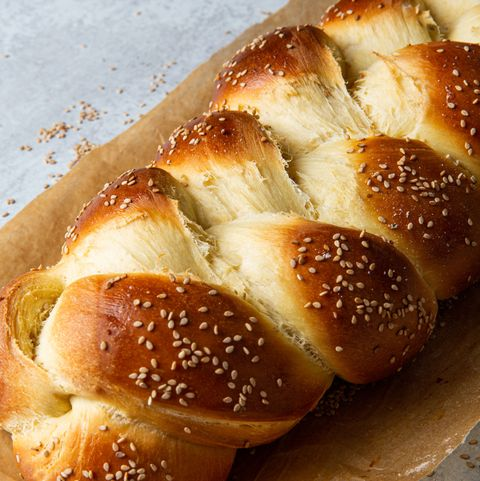

CHALLAH BREAD

Challah is an enriched egg bread made of yeasted dough, served on the Jewish Sabbath and on holidays or other celebrations. Braided challah is generally served on Fridays at Shabbat dinner. Round, coiled loaves are prepared for Rosh Hashanah; and for Yom Kippur, bakers form the bread into hands, ladders, or birds.
Roll each portion into a long 18x2-inch "rope." Taper one end of each rope so one end is thick, the other thin.
Place the thicker end of a rope in the center of a greased or parchment-lined baking sheet and coil the rest of the dough around the center.
When the length of dough runs out, tuck the thinner end underneath the coil and pinch to seal.
Repeat with the remaining length of dough. Proof, egg wash, and bake as directed.